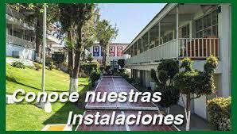

Creadora: María Fernanda Pérez Castillo
Servicio Social - Estudiante del plantel CBT Tultitlán
Bienvenido a esta plataforma, diseñada para ofrecer un servicio en el área de vinculación. Facilita trámites como el llenado de la Encuesta de Egresados y la visualización de empleos de la bolsa de trabajo del plantel Conalep Tlalnepantla III.
